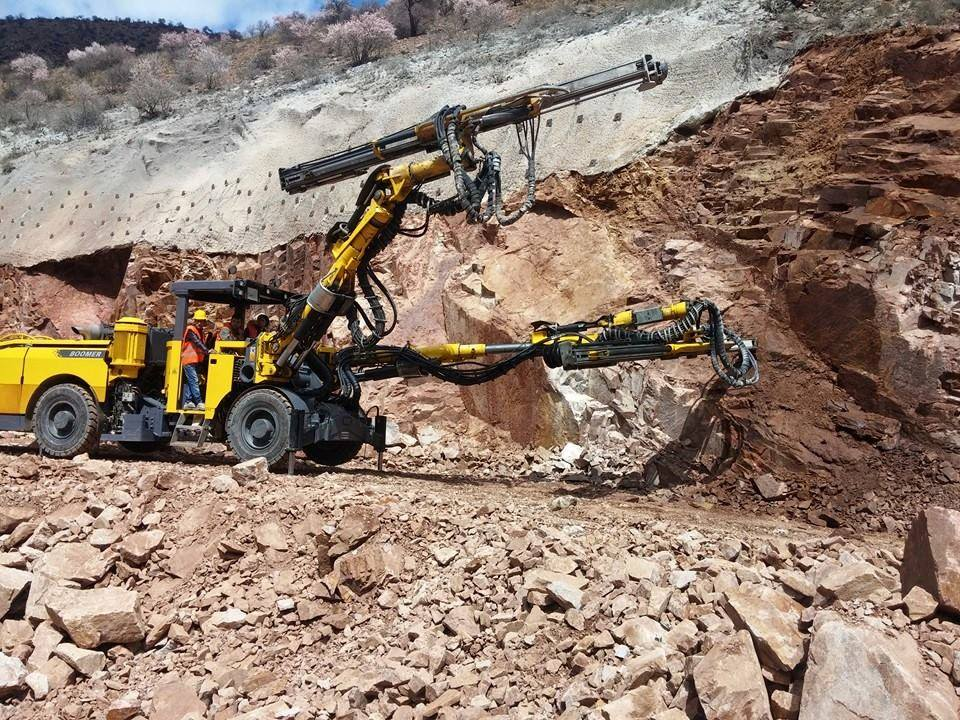

Başarılı bir beton dökümü, yalnızca kaliteli beton sipariş etmekle değil, döküm öncesi yapılan titiz hazırlıklarla mümkündür. Özellikle Erzurum gibi hava koşullarının hızla değişebildiği, kışın don riskinin yüksek olduğu bölgelerde, döküm öncesi kontroller ve alınacak önlemler yapı güvenliği açısından hayati önem taşır. Bu rehberde, beton dökümü öncesi atlanmaması gereken tüm adımları, Erzurum özelinde ekstra dikkat edilmesi gereken noktalarla birlikte bulacaksınız.
1. Kalıp Kontrolü ve Hazırlığı
Beton dökümü öncesi en kritik aşamalardan biri kalıpların doğru ve sağlam bir şekilde kurulduğundan emin olmaktır. Kalıp hataları, betonda sehim (eğilme), yüzey bozuklukları ve hatta kalıp patlaması gibi ciddi sorunlara yol açabilir.
- 📏 Ölçü Kontrolü: Kalıpların proje ölçülerine uygunluğunu kontrol edin. Aks aralıkları, kolon-kiriş ebatları ve döşeme kalınlıkları mutlaka şantiye şefi veya mühendis tarafından onaylanmalıdır.
- 🔩 Kalıp Bağlantıları: Kalıp yan destekleri (dikmeler) yeterli sıklıkta ve sağlam zemine oturtulmuş olmalıdır. Kelepçe ve kamalar sıkıca çakılmış olmalıdır.
- 💧 Kalıp Yağı: Betonun kalıba yapışmasını önlemek ve kolay söküm sağlamak için kalıp yüzeyine kalıp yağı sürülmelidir.
- 🧹 Temizlik: Kalıp içinde talaş, çöp, bağ teli artığı veya kar/toprak kalıntısı olmadığından emin olun. Özellikle Erzurum'da kışın kalıp içine kar dolması sık görülür; temizlenmezse beton içinde boşluklara ve don riskine neden olur.
2. Donatı (Demir) Kontrolü
Betonarme yapının taşıyıcı iskeletini oluşturan donatının doğru yerleştirilmesi, yapısal dayanım için şarttır.
- 📐 Donatı Çapı ve Adedi: Statik projede belirtilen çap ve sayıda donatı kullanıldığından emin olun.
- 📏 Pas Payı (Beton Örtü Kalınlığı): Donatı ile kalıp arasında bırakılması gereken mesafeyi sağlamak için yeterli pas payı (spacer) kullanılmalıdır. Erzurum'da donma-çözülme ve korozyon riskine karşı pas payının en az 3.5-5 cm olması önerilir.
- 🪢 Bağ Telleri: Donatıların kesişim noktaları tel ile sağlamca bağlanmalı, beton dökümü sırasında yer değiştirmemelidir.
- 🧼 Temizlik: Donatı yüzeyinde beton yapışmasını engelleyecek yağ, boya, çamur veya buz olmamalıdır.
3. Hava Durumu Takibi ve Erzurum'a Özel Önlemler
Beton dökümü için en uygun hava sıcaklığı +5°C ile +30°C arasıdır. Erzurum'da bu ideal aralığın dışına sıkça çıkılır. Bu nedenle:
- ❄️ Kış Dökümü (Ekim-Nisan): Hava sıcaklığı +4°C'nin altına düşüyorsa mutlaka antifriz katkılı beton sipariş edin. Döküm sonrası beton yüzeyini ısı yalıtım örtüleri (branda, saman, özel battaniye) ile örtün. Gerekirse şantiye sahasında ısıtıcılar konumlandırın.
- ☀️ Yaz Dökümü (Mayıs-Eylül): Aşırı sıcak ve rüzgârlı havalarda beton yüzeyinde hızlı buharlaşma olur. Plastik rötre çatlaklarını önlemek için dökümden hemen sonra yüzeyi nemli tutun (kürleme). Gerekiyorsa priz geciktirici katkı talep edin.
- 🌧️ Yağışlı Hava: Hafif yağmurda döküm yapılabilir; ancak şiddetli yağmurda döküm durdurulmalıdır. Yağmur, beton yüzeyinde bozulmalara ve su/çimento oranının artmasına neden olur.
4. Ekipman ve Saha Hazırlığı
Döküm günü aksamalar yaşamamak için aşağıdaki ekipmanların hazır ve çalışır durumda olduğundan emin olun:
- 🔌 Vibratör: Betonun kalıp içinde boşluksuz yerleşmesi için en az 2 adet (biri yedek) vibratör bulundurun. Vibratör boyunun döküm yapılacak en derin noktaya ulaşabildiğinden emin olun.
- 🚛 Transmikser Yolu: Şantiyeye giden yolun transmikser ve beton pompasının geçişine uygun olduğunu kontrol edin. Erzurum'da kışın yolların buzlu olabileceğini unutmayın; gerekirse tuzlama yapın.
- 📏 Kot İşaretleri: Döküm yapılacak alanda beton üst kotunu belirleyen işaretler (kazık, ip, lazer) hazır olmalıdır.
- 🧰 El Aletleri: Kürek, mala, mastar, çekçek gibi döküm anında ihtiyaç duyulacak aletler sahada hazır bulunmalıdır.
5. Santral ile Son Teyit
Döküm sabahı beton santralini arayarak aşağıdaki bilgileri teyit edin:
- ✅ Sipariş edilen beton sınıfı (C25, C30 vb.)
- ✅ Toplam m³ miktarı
- ✅ Tahmini ilk transmikser varış saati
- ✅ Pompa varış saati (pompa sipariş edildiyse)
- ✅ Özel katkı talepleri (antifriz, geciktirici vb.)
Bu teyit, olası yanlış anlaşılmaların ve gecikmelerin önüne geçer.
Beton Dökümü Öncesi Kontrol Listesi (Özet Tablo)
| Kontrol Kalemi | Dikkat Edilecek Husus |
|---|---|
| Kalıp | Sağlamlık, ölçü uygunluğu, temizlik, kalıp yağı |
| Donatı | Çap/adet uygunluğu, pas payı, bağlantılar, temizlik |
| Hava Durumu | Sıcaklık, yağış, rüzgâr. Erzurum'da kış için antifriz/ısı yalıtımı, yaz için kür planı |
| Ekipman | Vibratör (yedekli), transmikser yolu, kot işaretleri, el aletleri |
| Santral Teyidi | Beton sınıfı, miktar, varış saati, katkılar |
📞 Erzurum'da Sorunsuz Beton Dökümü İçin Yanınızdayız
Döküm öncesi keşif, doğru beton seçimi ve teknik danışmanlık için ME-KA İnşaat'a ulaşın.
✅ Doğru hazırlık + kaliteli beton + profesyonel destek
Sık Sorulan Sorular
Kalıp yağı sürmek zorunlu mudur?
Evet, betonun kalıba yapışmasını önler, sökümü kolaylaştırır ve beton yüzeyinin düzgün olmasını sağlar.
Pas payı neden önemlidir?
Donatının beton tarafından yeterince örtülmesini sağlayarak korozyonu (paslanmayı) önler ve yangın dayanımını artırır.
Erzurum'da gece beton dökülür mü?
Kışın gece sıcaklıkları çok düştüğü için önerilmez. Yazın ise aşırı sıcaklardan kaçınmak için gece dökümü avantajlı olabilir.
Döküm öncesi sahada kar varsa ne yapılmalı?
Kalıp içindeki kar mutlaka temizlenmeli, donatıdaki buzlar eritilmelidir. Aksi halde beton içinde boşluklar oluşur.